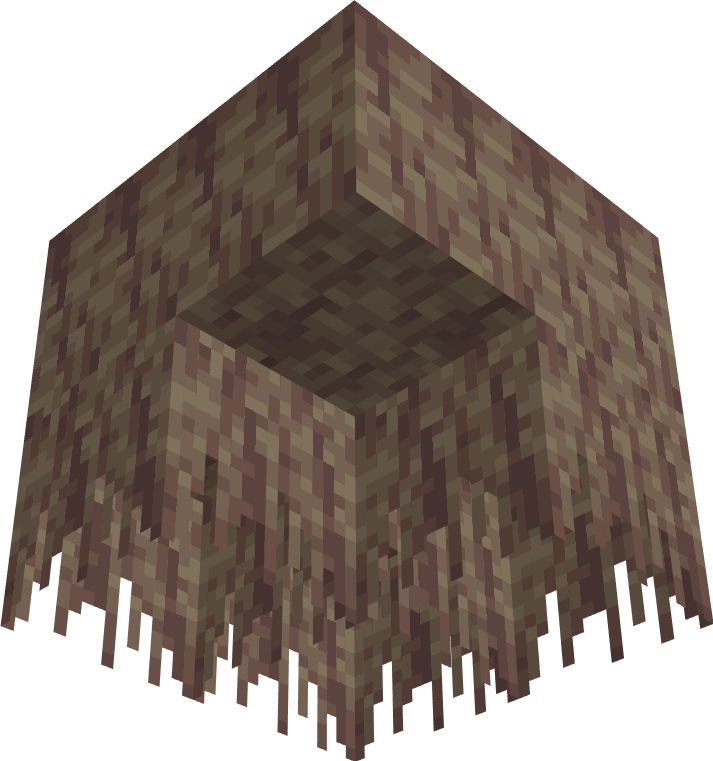

@Minecraft @Mojang
除此之外加入了全新生物群系冰洞(Ice Cave)，里面有一个名为冰锥的新方块，但是完全就是换皮滴水石锥。滴水石锥的设计师本人都说这只是ta当初设计的18种石锥的其中一种

除此之外加入了全新生物群系冰洞(Ice Cave)，里面有一个名为冰锥的新方块，但是完全就是换皮滴水石锥。滴水石锥的设计师本人都说这只是ta当初设计的18种石锥的其中一种

WTF??? MINECRAFT居然要出新维度了？？？ @Minecraft @Mojang
Mojang在2026年9月底的Minecraft Live上正式公布了新维度，名叫："The Sift"（可译为筛界、滤界等，目前暂无社区共识翻译）
它会在2027年同步加入JavaE和BedrockE，这将是Minecraft 14多年以来首次增加全新维度
https://t.co/XqpxwPmmYN
Mojang在2026年9月底的Minecraft Live上正式公布了新维度，名叫："The Sift"（可译为筛界、滤界等，目前暂无社区共识翻译）
它会在2027年同步加入JavaE和BedrockE，这将是Minecraft 14多年以来首次增加全新维度
https://t.co/XqpxwPmmYN